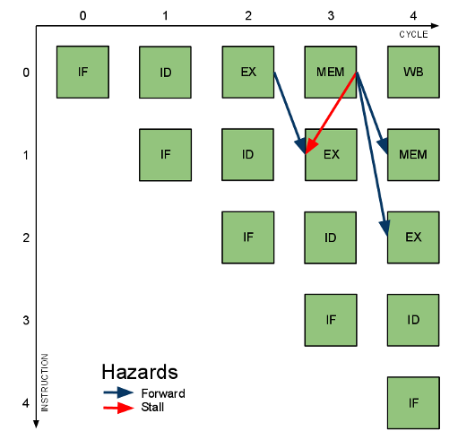

PLP Dev Team
ECEN
Oklahoma State University, OK
To build PLP from a linux host, you will need to have the xilinx webpack ise installed. Navigate to the `hw` directory for the version of plp you want to build, source the xilinx settings (see xilinx documentation), and run the build script for your target board.
For example, if you were targeting the Nexys2 500k board with plp-3.3:
cd plp/reference/plp-3.3/hw
source /opt/Xilinx/12.4/ISE_DS/settings64.sh
sh scripts/build_500k_linux.sh
A lot of information from the xilinx tools will be generated, and hopefully you'll end up with a successful build.
The build files are located in the hw/build/<board version> directory. If you built the Nexys2 500k target, you would find the build files in hw/build/build_500k_volatile/. Two files are of interest: 'top.bit' and 'top.mcs'. The mcs file is the prom image of the bit file.
From there you can configure the FPGA and have at it!

The CPU is a simple, 5-stage pipelined, MIPS-like machine. It implements a subset of the MIPS ISA, described in the user manual.
The diagram reflects how the CPU is implemented on the FPGA.
The branch target calculation is abstracted in the diagram. Branch target is actually calculated by adding PC + 4 to the branch target which is sign extended and left shifted twice.
All instructions except for load word (lw) resolve in the EX stage. This has implications in potential data and control hazards. For example, we could eliminate the branch control hazard by moving the branch resolution hardware to the ID stage. The branch instruction already has a delay slot defined, so by resolving the branch in the ID stage, there would be no control hazard. However, this move introduces 5 additional data hazards, 3 of which require stalling the pipeline, including one that stalls for 2 cycles. Due to the likelihood of branch instructions depending on immediately previous instructions (calculate/branch), this stall would significantly impact performance. Therefore, branch instructions are resolved in the EX stage. There are also educational reasons for this configuration, as it incorporates a stall, several forwards, and a flush event which are valuable to learn about in the lab.

The PLP reference design forwards or stalls on all potential data hazards. Forwarding/Hazard logic is shown in the diagram in blue. Below is a table of all potential hazards, how each hazard is avoided, and an instruction sequence that exposes the hazard.
| Hazard | Forward/Stall | Example Instruction Sequence |
|---|---|---|
| EX->EX | Forward | addu $t0, $t1, $t2 |
| addu $t3, $t0, $t1 | ||
| MEM->MEM | Forward | lw $t0, 0($t1) |
| sw $t0, 0($t2) | ||
| MEM->EX | Forward | lw $t0, 0($t1) |
| nop | ||
| addu $t3, $t0, $t1 | ||
| MEM->EX | Stall | lw $t0, 0($t1) |
| addu $t3, $t0, $t1 |
The savvy reader may note that there could be hazards originating from the WB stage. This would happen in a RAW hazard between two instructions that were four stages apart. In fact, the register file is written to on the negative edge of the clock, and so finishes half-way through the WB stage, allowing an asynchronous read to occur in the ID phase, eliminating all WB hazards.
Since all modules are memory mapped the bus arbiter will send all module signals to the proper module based upon their memory map.
The current method is a 32-bit 12-1 mux which is controlled by the comparing the requested addresses to the memory map. This passes the requested data and instruction from the called module back to the CPU.
| First Memory Address | Size (in Words) | Module |
|---|---|---|
| 0x00000000 | 512 | Bootloader ROM |
| 0x10000000 | 16777216 | SRAM |
| 0xf0000000 | 16 | UART |
| 0xf0100000 | 4 | Switches |
| 0xf0200000 | 4 | LEDs |
| 0xf0300000 | 12 | GPIO |
| 0xf0400000 | 8 | VGA |
| 0xf0500000 | 8 | PLPID |
| 0xf0600000 | 4 | Timer |
| 0xf0700000 | 8 | Interrupt Controller |
| 0xf0800000 | ? | PMC Hardware |
| 0xf0a00000 | 4 | sseg |
Modules have a standard port interface to facilitate a (later) module generator, and to make the arbiter code look pretty.
All modules must have the following port spec:
module mod_mymod(rst, clk, ie, de, iaddr, daddr, drw, din, iout, dout);
input rst;
input clk;
input ie,de;
input [31:0] iaddr, daddr;
input drw;
input [31:0] din;
output [31:0] iout, dout;
| port name | description |
|---|---|
| rst | synchronous reset |
| clk | system clock |
| ie | instruction port enable |
| de | data port enable |
| iaddr | instruction port address |
| daddr | data port address |
| drw | data port read/write. 0 = read, 1 = write |
| din | data port data in |
| iout | instruction port data out |
| dout | data port data out |
Additional ports may be added to the end of the port list shown above, should that module have its own I/O.
Modules must be negatively edge triggered. Reset is synchronous. Output on iout and dout when not enabled (via ie and de) should be HiZ. This is accomplished with:
wire [31:0] idata, ddata; assign iout = ie ? idata : 32'hzzzzzzzz; assign dout = de ? ddata : 32'hzzzzzzzz;
Once modules are created, they can be added to the memory map by adding a line in the mm module. Addresses passed to the module are effective addresses, that is, the upper bits that designate the module are zeroed. That is, address 0xf0200050 would appear to the module as 0x00000050.
Version 2.2 will have a module autogen script, that builds modules into the memory map with a special verilog comment:
/* PLP2MODULE start:0xf0200000 length:0x00000100 */ module my_module(rst, clk, ie, de, iaddr, daddr, drw, din, iout, dout);
The ROM uses the initial construct in Verilog to populate the ROM at synthesis time. In order for the synthesizer to correctly build the ROM, the entire memory must be specified, meaning that you may have to pack additional garbage (in our case zeros) at the end of the bootloader code.
The Cellular RAM is used in asynchronous mode, using the standard SRAM interface. The Cellular RAM has a few additional ports that have to be used in special ways:
| Port | Description |
|---|---|
| MT-CLK | Clock signal used during synchronous mode. We must tie it static LOW. |
| MT-ADV | Address valid (active low). Held LOW since we latch the address in another place. |
| MT-CRE | Control register enable. Tie LOW. |
| MT-CE | Chip enable (active low). Tie LOW. |
| OE | Output enable (active low). Tie LOW. |
| WE | Write enable (active low). Tied low on write cycles. |
| MT-LB | Lower byte enable (active low). Tie LOW. |
| MT-UB | Upper byte enable (active low). Tie LOW. |
Read operations occur by bringing CE, OE, LB, and UB low while leaving WE high. Writes occur by bringing CE, LB, UB, and WE low, and bringing OE high. Data to be written is latched on the rising edge of WE.
Because the system clock is only 25MHz data writes take 6 cycles (two 16-bit writes). Normally this should take only four cycles, but the data words have to be latched. I didn't want to add a faster clock domain or mess with dual-edge triggered logic to make a higher precision SRAM interface, so I left the SRAM writes at 6 cycles. Data reads still only take 4 cycles, which is just fast enough for VGA reads to work.
Below the SRAM is a simple cache. This is used because reads to the SRAM are already 4 times slower than the CPU, and the VGA module can hold the SRAM for upwards of 640 cycles at a time, all of which the CPU spends stalled.
The cache used right now is the simplest possible: Direct mapped, unified, write allocate, write through. We use direct mapped because it's the simplest to design, a unified cache because it eliminates coherency issues between caches, write allocate for performance, and write through for coherency with the SRAM. Write through also eliminates the need for eviction logic (we can always safely trash data being evicted). The only cache-able region will be the SRAM (0x10000000-0x10ffffff).
The VGA module implements 3 elements: The VGA timing controller, the VGA module interface and control registers, and the VGA-SRAM bypass.
The VGA timing controller, which is probably the only logic retained from the 1.0 tree, implements a 640x480x60Hz VGA core. It requests an 8-bit color value during the write phase at 25MHz. The 8-bit pixel values are satisfied via the scan line buffer in the VGA-SRAM bypass.
The VGA module interface and control registers allow the user to control the VGA module. The old module extended a way to read/write to VGA memory, but the VGA memory is in the SRAM now, and the user can just write to RAM to accomplish that. The VGA interface provides 2 registers: control and frame buffer pointer.
The control register currently only has one bit in the LSB position: 0=disabled, 1=enabled. We provide this functionality because the VGA module can consume a lot of memory time if enabled when unneeded.
The frame buffer pointer is simply the base address of the frame buffer to draw in memory. This makes double (or N) buffering possible.
The VGA-SRAM bypass is a special module-to-module interconnect that will override any upstream memory requests. We do this because SRAM reads take 4 cycles, and we attempt to fill a buffer with a full scan line (640 bytes/pixels). We start a scan line read as soon as we enter the backporch, loading a 640 byte register in the VGA module. This is why the VGA module can decimate memory access time for the CPU. The VGA module consumes 640 cycles of every 800 cycle quantum (80
The PLPID module will eventually house a lot of other system data for use by libplp and other things when the system become fractured. Currently it stores the board revision (3.03 = 0x00000303) and the board frequency.
A 32-bit counter which increments on the negative clock edge. The value is reset to zero whenever it is accessed.
This document was generated using the LaTeX2HTML translator Version 2008 (1.71)
Copyright © 1993, 1994, 1995, 1996,
Nikos Drakos,
Computer Based Learning Unit, University of Leeds.
Copyright © 1997, 1998, 1999,
Ross Moore,
Mathematics Department, Macquarie University, Sydney.
The command line arguments were:
latex2html ReferenceHardwareManual.tex -show_section_numbers -split 0 -dir ReferenceHardwareManualSingle
The translation was initiated by will on 2012-02-08